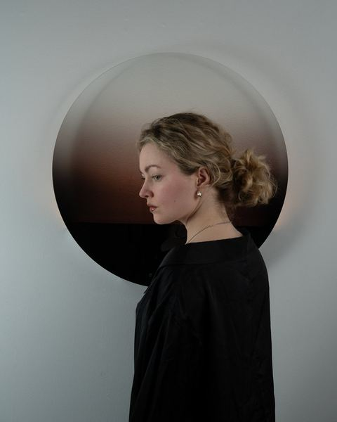
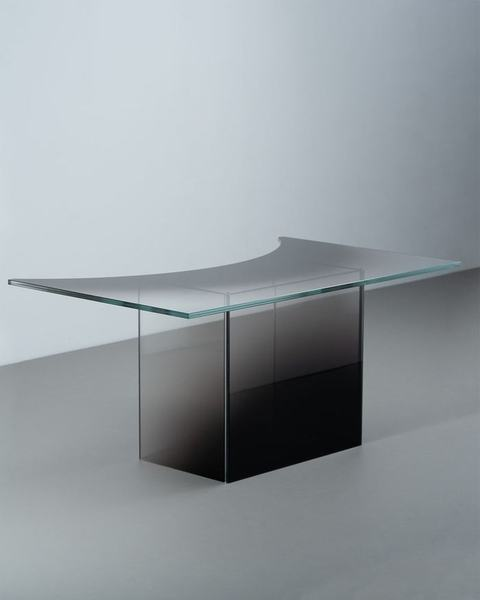

Maison d'Artiste — GLUEThe Drawing RoomAll makers →
Nicolette de Waart
Nicolette de Waart builds light out of thousands of hand-kneaded paper spheres — a wayward continuation of the Japanese chochin tradition, where an object's apparent weight is a kind of misdirection. Her Berry Lamps take the irregular, knobbled skin of the fruit they're named for not as ornament, but as construction principle: no two spheres alike, no two lamps identical.

01Work3 recorded


02Practice
Nicolette de Waart works where sculpture meets functional object, in a practice built around connection, femininity and beauty. Her Berry Lamps pay homage to the Japanese chochin lantern, an age-old tradition that still works as a delicate, fully realised piece of art. She translates that principle using mainly natural materials, worked entirely by hand: the result is featherlight, in weight too, yet solid as rock.
Her design vocabulary is rooted in nature and shaped by the countries she has lived in — Singapore, the United Kingdom, the Netherlands. Research is not a preliminary stage for her but a method. The Berry Lamps came out of play with paper-kneaded balls, and the recognition within that of the conical, irregular pattern of a blackberry. In nature, imperfection is not a flaw but a character, and De Waart deliberately exaggerates the asymmetry. Each lamp follows no pattern, only intuition, and is therefore unrepeatable.
Her work moves continuously between craftsmanship and innovation, in partnership with foundries and their specialist knowledge of bronze, wood, textile, clay and the lost-wax process.
03Why this maker, and where
GROUND showed where a maker's authority comes from. In a space built for habitation, De Waart's work asks a different question: what happens when a light source behaves like an inhabitant rather than an object.
Her Berry Lamps are functional — they light a room the way a lamp should — but their skin, built from hundreds of unequal spheres, refuses the smoothness usually expected of an interior piece. On the sixth floor of NIO House that tension does not sit opposite habitation but inside it: an object that is as much sculpture as fixture, and that only completes itself once light passes through it.
04In brief
100% of the sale proceeds go to the maker. MADART Foundation takes no commission and holds no exclusive contract. Enquiries go directly to Nicolette de Waart.
—More makers30 in the register


Aad Kruiswijk
Gallery 2 — floor
8 works


Andreea Pirlica
Second floor
1 work


Anne van Borselen
Gallery 1
13 works


Arno Hoogland
Gallery Lounge
10 works


Billie-Jo Krul
Gallery 4 — floor · ECHO
3 works


Coen Beeksma
Gallery 4 — floor · ECHO
1 work


Cynthia & Kevin Kars-Boom
Gallery 4 — floor · ECHO
1 work


Eric Sloot
The Drawing Room / The Dining Room
3 works


Erwin Woldring
Gallery 4 — floor · ECHO
2 works


Frank Penders
Gallery 4 — floor · ECHO
2 works


Frederik Wasseur
Gallery 4 — floor · ECHO
1 work


Herma de Wit
Staircases — ground, fourth and fifth floor
3 works


Inge Bečka
Ceramics, throughout the house
18 works


Jan Willem van Elten
Gallery 4 — floor · ECHO
1 work


Jeroen van Veluw
Gallery 4 — floor · ECHO
2 works


Jim Bob Ruijgrok
The Parlour
4 works


Joost de Munnik & Ruud van den Eijnden
The Conservatory
1 work


Lilia Luganskaia-Kuilder
Sixth floor — dedicated space
3 works


Loutje Hoekstra
Gallery 4 — walls
9 works


Maaike Rabbinge
Gallery 4 — floor · ECHO
3 works


Marc th. van der Voorn
Gallery 4 — floor · ECHO
1 work


Marnix Van Strydonck
The Dining Room / The Parlour
4 works


Maurice Albert Jan
The Drawing Room / Dining Room / Parlour
4 works


Ritsert Mans
Gallery 4 — floor · ECHO
2 works


Rogier Bosschaart
Gallery 2 — walls
5 works


Sandra Keja Planken
Gallery 3
8 works


Sophie Wantia
Gallery 4 — floor · ECHO
1 work


Zowa Rindt
Gallery 4 — floor · ECHO
1 work